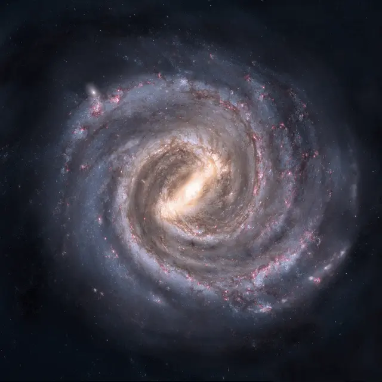

Galaksi Spiral
Galaksi Bima Sakti (Milky Way) adalah galaksi spiral berpalang (*barred spiral galaxy*) raksasa yang menampung Tata Surya kita dan diperkirakan berisi antara 100 hingga 400 miliar bintang. Berdiameter sekitar 100.000–180.000 tahun cahaya, galaksi ini memiliki struktur piringan berputar yang dihubungkan oleh sebuah palang pusat (*central bar*) dan lengan-lengan spiral berdebu kaya gas tempat pembentukan bintang baru. Di pusat ekstrem Bima Sakti bersemayam sebuah lubang hitam supermasif yang dikenal sebagai **Sagittarius A*** (Sgr A*). Tata Surya kita berlokasi di Lengan Orion (*Orion Arm*), berjarak sekitar 27.000 tahun cahaya dari pusat galaksi, dan membutuhkan waktu sekitar 230 juta tahun untuk menyelesaikan satu kali orbit galaktik (*Galactic Year*).